28th to 29th June 2024
Hello all. Here's a piece on the time my sister and I spent in South East Massachusetts. It's very pretty here. Lots of green plant life, craggly rocks and beaches in coves everywhere. As a brit I'd describe it best as New England's Cornwall.
Yes, it turns out the pilgrims who were first permitted to settle in the US by the king called their first settlement Plymouth. What's even better is that the ship that first landed here and named the town set sail from Plymouth. A very creative bunch if you ask me. The Greek inspired building you can see below houses Plymouth Rock.
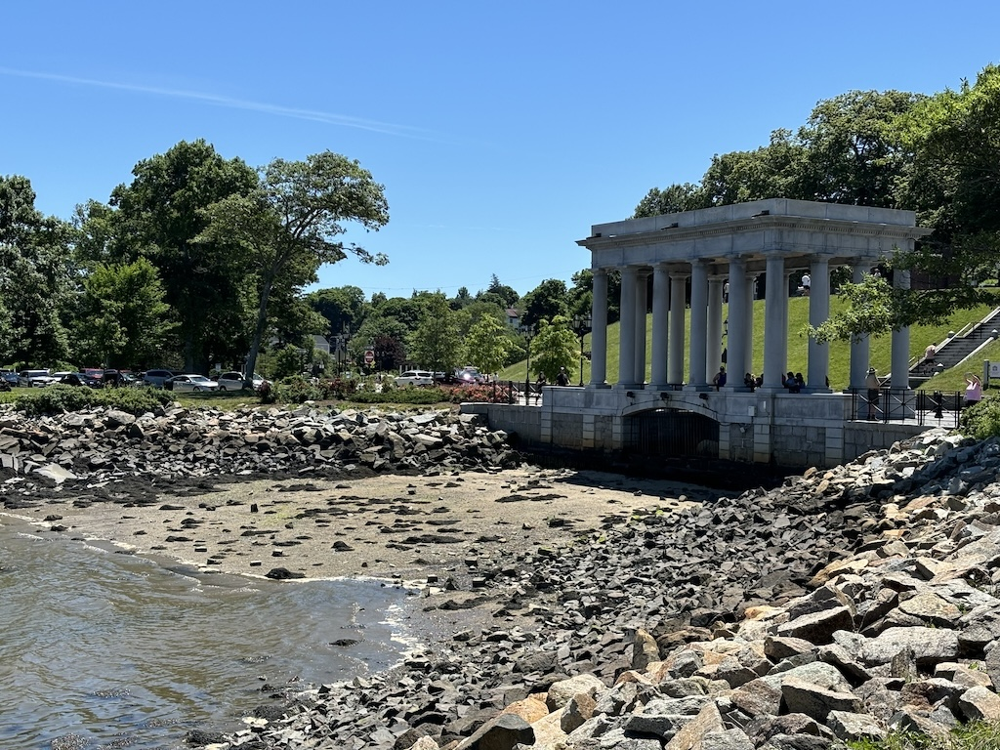Here it is. It's literally just a rock with the year the settlers arrived on it. I think it's theorized as the place the pilgrims first stepped foot on the North American continent. Boats had explored the coastline before and even stayed on the lands interactive with the Native American tribes here. But Plymouth is the first established settlement of Europeans. But in short, it is just a rock.
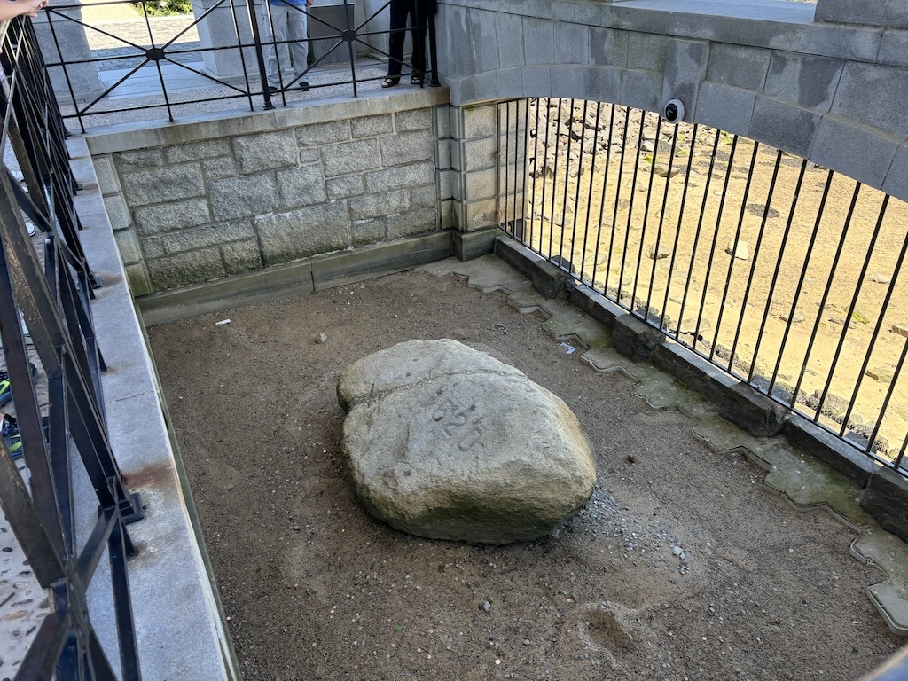We walked along the seafront that had this really pretty old ship anchored up. This is part of the Plimoth Patuxet Museum and the ship is called the Mayflower II.
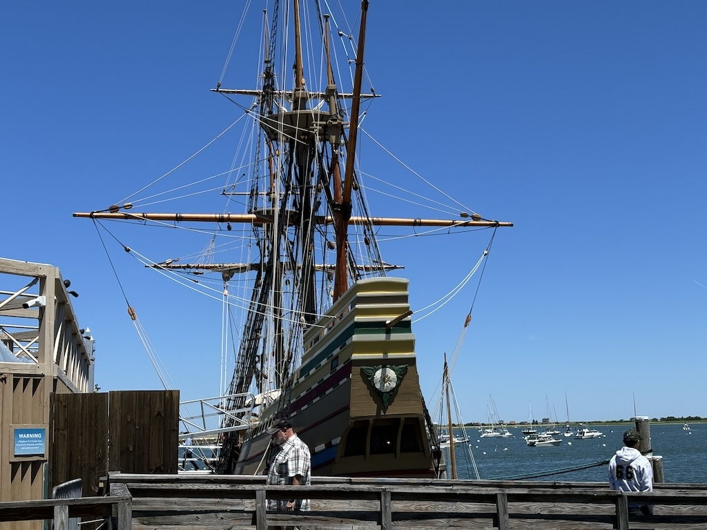We opted not to pay to go in the museum and on the boat (which is extra on top), but it is very pretty. I'm assuming the original didn't have the 2 far more modern looking walkways onto the boat. Health and safety probably didn't let them use the plank.
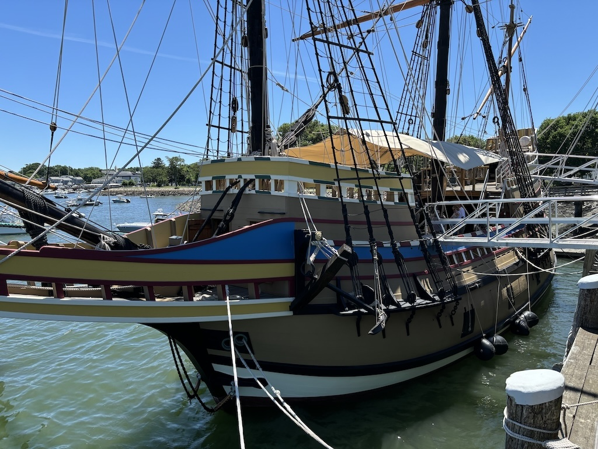We did opt to go in the Pilgrim Hall Museum though, which boasted lots of art and information about the first landers here. They even had what they claim to be the oldest formal document in the USA, the letter from the king giving them permission to settle here. They also had a napkin from the first settlers which I thought was a bit weird, the stitching was nice but still felt like a strange thing to frame and put on the wall.
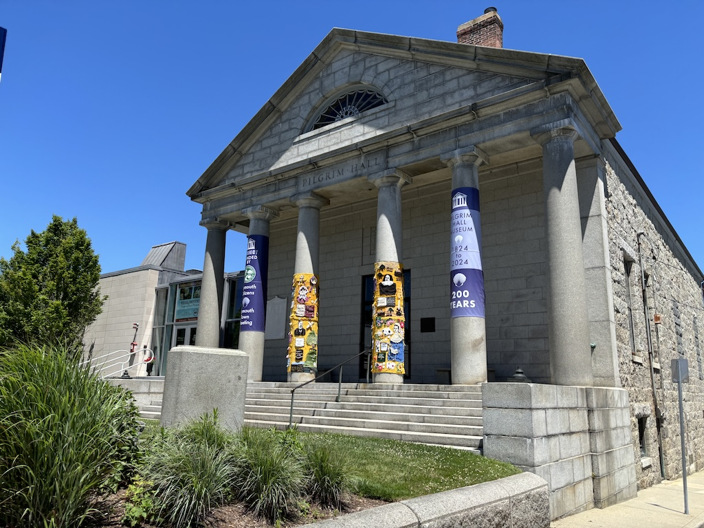After a few hours in Plymouth we drove on to Cape Cod where we'd be staying the night. My sister and I fancied seeing some of the beaches here, which in Europe is pretty easy as there are very few private beaches. This was not the case here, lots of the coastline is privately owned. We went to a few different ones trying to find one that wasn't private to the locals or pay to enter and ended up going to Nauset Light Beach. After the ranger goes home and no ones in the booth to take car parking payments it becomes free. Keen for a swim this shark warning sign did give us both a bit of a scare on if we'd be mauled by the sea life here Jaws style.
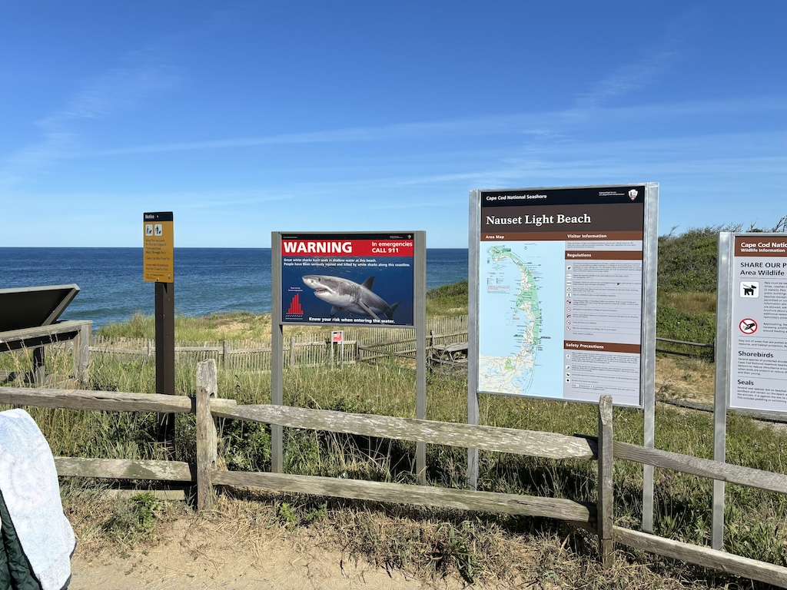I did ask the lifeguards if it was safe to swim here as no one was in the water and the reassured me it was fine. We had a quick swim and a read overlooking the North Atlantic, trying to squint to see if we could spot Wales or the Isles of Scilly. We sadly could not. Thanks curvature of the Earth for obscuring our view.
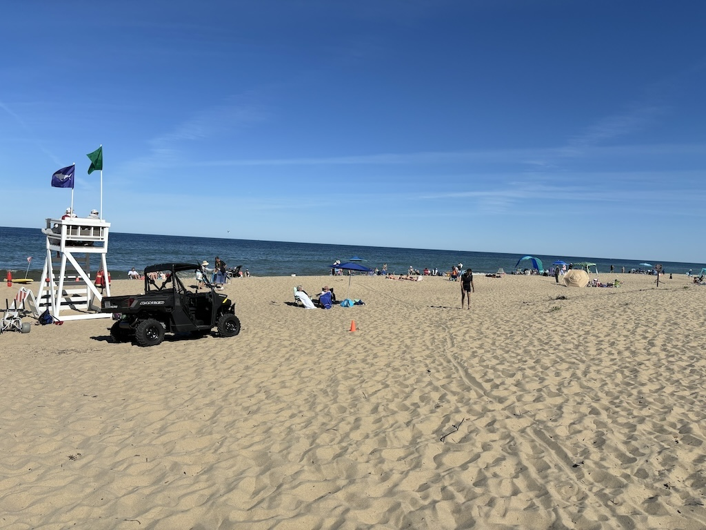Talking of the Scilly Isles this area really did feel like one of the islands there. St Mary's has a strip of land (I think technically called an Isthmus?) where you can cross the land beach to beach in about 10 minutes of walking. Here it's the same, although it's about a 10 minute drive. The photo below is of Skaket beach in the evening, a really nice relaxing place to watch the sunset. Being bay side the water is very calm and incredibly gradual on the incline into the ocean. You can see in the background where someones private property containing the beach starts, lining the boundary with warning signs like it's a minefield. The owners probably live in Boston and only go there a week a year anyway.
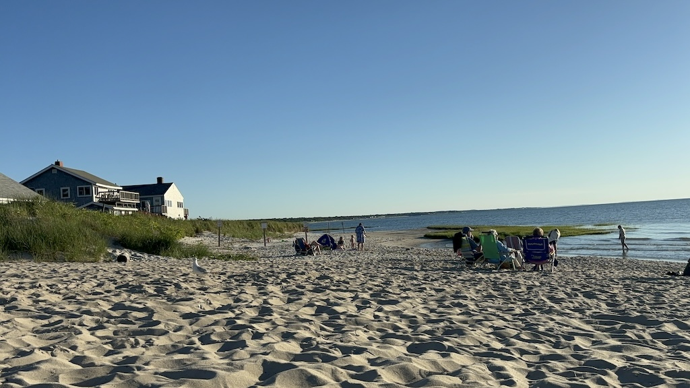We stayed in the hostel in Hyannis that night, which was a really quaint and relaxing stay. Below are some photos from the harbour area in Hyannis which is similarly peaceful and very pretty. It really does feel like a clone of Falmouth.
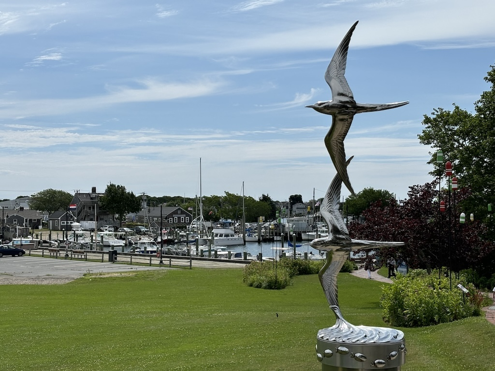A walkway with lots of small huts lines the edge of the port area. They contain small pop up shops from local buyers which were sadly closed this late in the day. Regardless the art on this one I thought was very good.
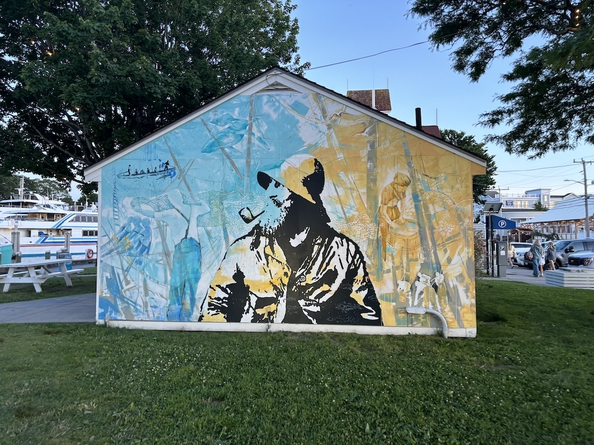It's the next day and we're heading back West. My sister flies out tomorrow so Rhode Island is our last stop before I take her back to JFK airport for her flight home. I'd love to know from anyone reading what we missed out on here by only spending a couple of hours in town. The only spot we visited was Roger Williams Park.
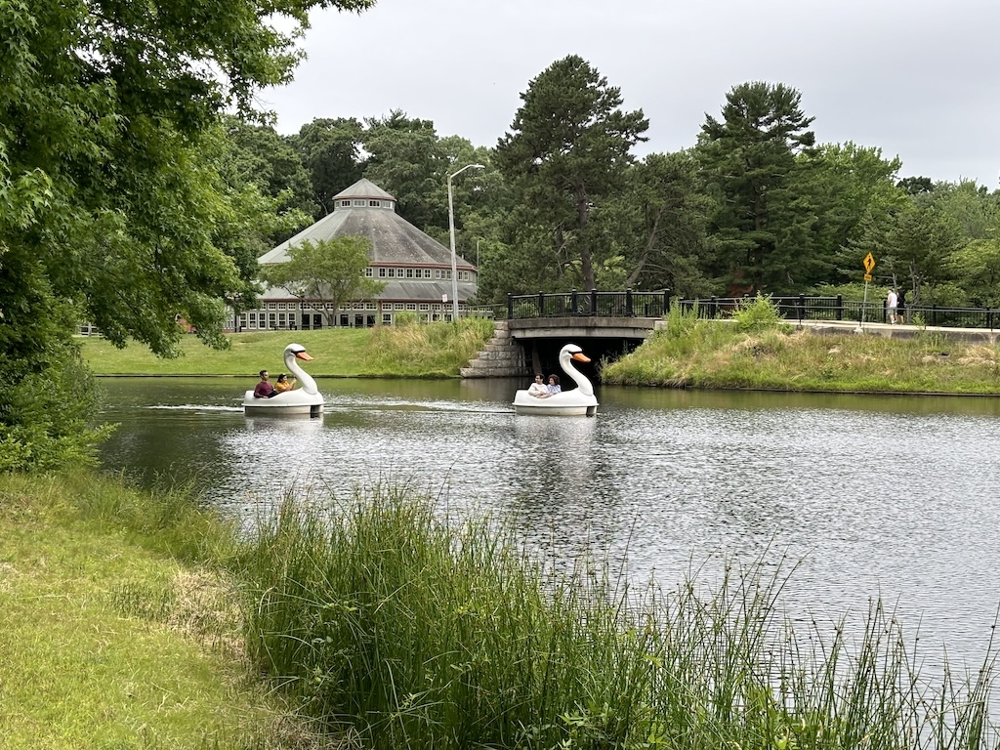A mixture of small grass sections and lakes, I thought it was pretty nice. There was also very few people sleeping in the park, which I hope is a sign that the homeless in Providence have other better sleeping options.
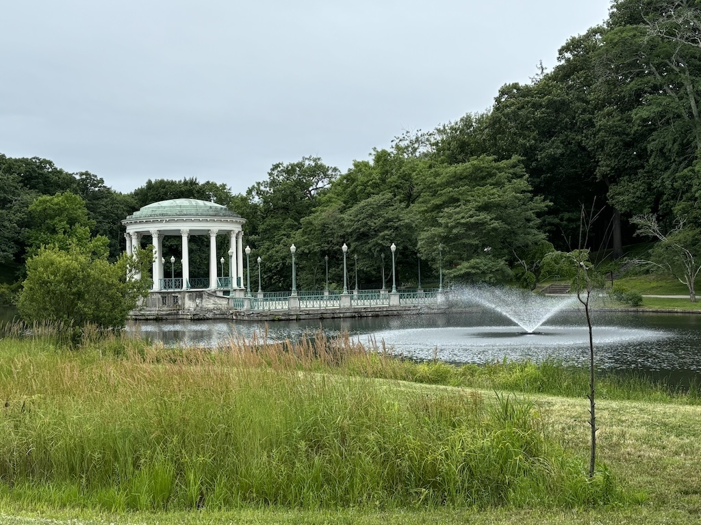With that we headed back to Connecticut to stay with family. My auntie and uncle grilled and slow cooked lots of meats in a classic American BBQ. It did rain a lot so sadly we had to eat and catch up inside but nonetheless it was a great Sunday accompanied with even better food. My sister has flown East back to England and is home safe and sound, while I now head West! See you then.
Navigate home